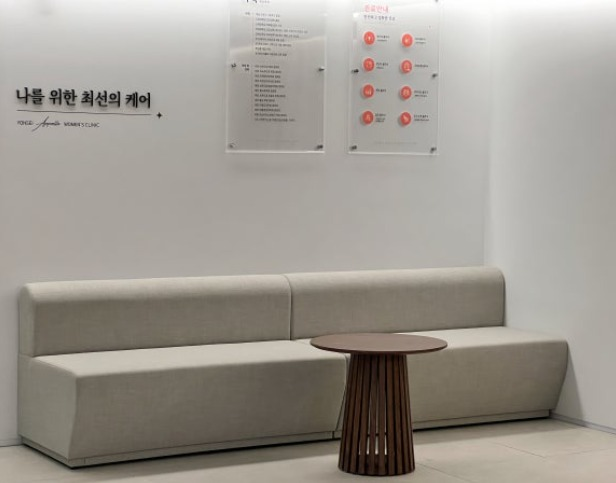

나에게 맞는 피임법을 찾으세요
피임 방법은 종류가 다양하고 사람마다 맞는 방법이 다릅니다. 건강 상태, 복용 중인 약, 임신 계획, 생활 패턴을 함께 고려해 선택해야 합니다.
필요한 정보를 정확히 알고 선택하실 수 있도록 장점과 주의할 점을 충분히 설명해 드립니다.
이런 분들께 권해드려요
- 피임을 처음 시작하려고 하는데 어떤 방법이 맞는지 모르겠다
- 경구피임약을 복용하고 싶지만 부작용이 걱정된다
- 피임에 실패했거나 응급피임이 필요하다
- 생리통·생리불순이 있어 약 처방을 상담하고 싶다
피임 방법 한눈에 보기
각 방법의 특성이 다르므로 상담 후 결정하시길 권합니다.
경구피임약
매일 일정한 시간에 복용하는 방법으로, 처방이 필요한 전문의약품입니다. 생리주기 관련 불편 개선을 위해 처방되기도 합니다.
응급피임
피임에 실패했거나 피임 없이 성관계를 한 경우 사용하는 방법입니다. 가능한 한 빨리 복용할수록 효과가 높으므로 지체하지 말고 연락해 주세요.
장기 피임법
자궁내장치·피하이식 등 한 번 시술로 장기간 유지되는 방법이 있습니다. 개인 상태에 따라 적합 여부가 다르므로 상담이 필요합니다.
콘돔
임신 예방과 함께 성매개감염 예방에도 도움이 됩니다. 다른 피임법과 병행하면 더 안전합니다.
본 내용은 일반적인 의학 정보이며 개인의 상태에 따라 진단과 치료가 달라질 수 있습니다. 정확한 진단은 진료를 통해 받으시기 바랍니다.
진료는 이렇게 진행됩니다
상담
건강 상태·병력·복용 약·임신 계획을 확인합니다.
방법 선택
각 피임법의 장단점을 설명하고 함께 선택합니다.
처방·시술
선택한 방법에 따라 처방 또는 시술을 안내합니다.
경과 확인
복용법과 이상 반응 시 대처법을 알려드립니다.
자주 묻는 질문
네, 일정한 시간에 복용하는 것이 효과를 안정적으로 유지하는 데 중요합니다. 복용을 놓쳤을 때의 대처법은 제품마다 다르므로 처방 시 자세히 안내해 드립니다.
성관계 후 가능한 한 빨리 복용할수록 효과가 높으며, 시간이 지날수록 효과가 떨어집니다. 일반적으로 72시간 이내 복용이 권장되므로 빠르게 연락해 주세요.
복용을 중단하면 대부분 가임력이 회복되는 것으로 알려져 있습니다. 체중 변화 등 개인차가 있는 반응은 상담 시 충분히 설명해 드립니다.
물론입니다. 결혼 여부와 관계없이 편하게 상담하실 수 있으며, 진료 내용은 의료법에 따라 비밀이 보장됩니다.